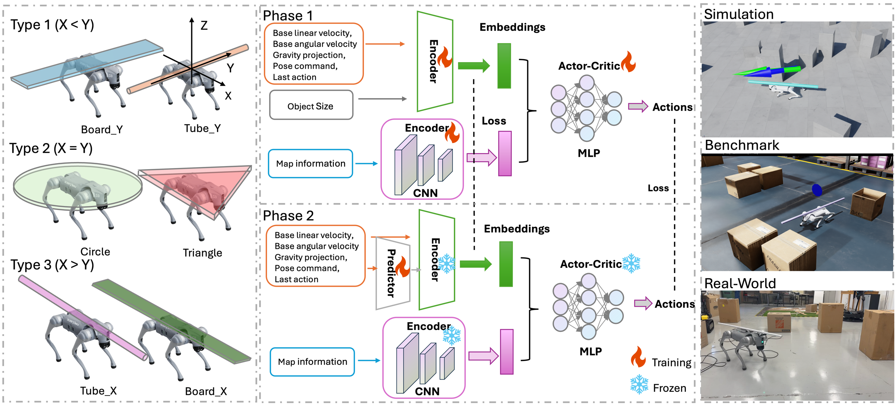

Navigating cluttered environments while carrying objects remains a challenging problem for quadruped robots. Compared with works that focused on load-aware locomotion adaptation to maintain gait stability, existing autonomous navigation systems generally ignore the influence of carried objects' geometries and use fixed footprint inflation, leading to overly conservative navigation. To fill this knowledge gap, we propose a two-phase load-aware navigation learning framework. In Phase 1, we train LOADNav, a load-aware navigation policy via reinforcement learning, enabling the robot to adapt its trajectory and clearance behavior according to the geometric size of the carried object. In Phase 2, we train CoGE, an online geometry predictor via imitation learning, which estimates unknown payload geometry from occasional contact events. We evaluate the framework in cluttered environments with loads of varying sizes and shapes. The results show that our navigation policy exhibits clear load-aware behaviors, and the online geometry predictor estimates object geometry from occasional contact events, refining its estimate and adapting the navigation behavior accordingly. Without requiring any prior knowledge of the payload, it narrows the gap to geometry-aware policies.

Figure 2. Overview of our proposed navigation framework. (Left) Three object geometry types categorized by their X and Y dimensions. (Middle) Two-phase training pipeline: Phase 1 trains the load-aware navigation policy with privileged object size input via Reinforcement Learning, while Phase 2 trains the contact-based predictor via Imitation Learning with the main policy network frozen. (Right) Evaluation across simulation, benchmark, and real-world environments.
@article{loadaware2026,
title = {Load-Aware Quadruped Navigation with Online Contact-based Geometry Estimation},
author = {Yin, Qi and Zhang, XiaoLi and Shi, Yangming},
journal = {arXiv preprint},
year = {2026}
}